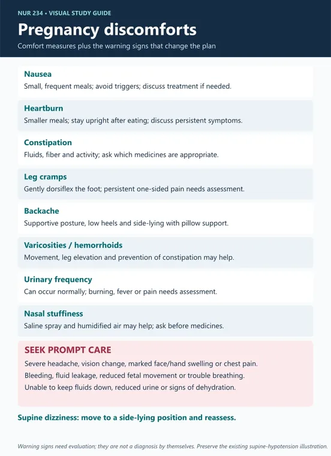
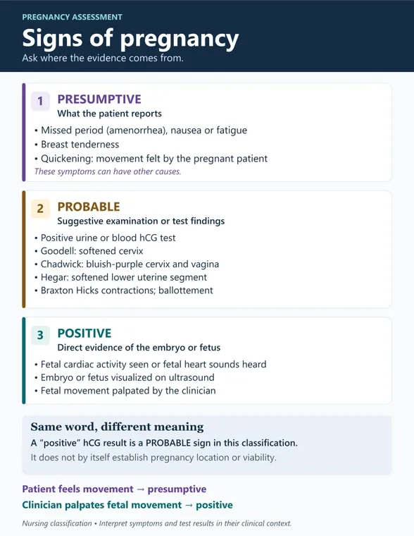
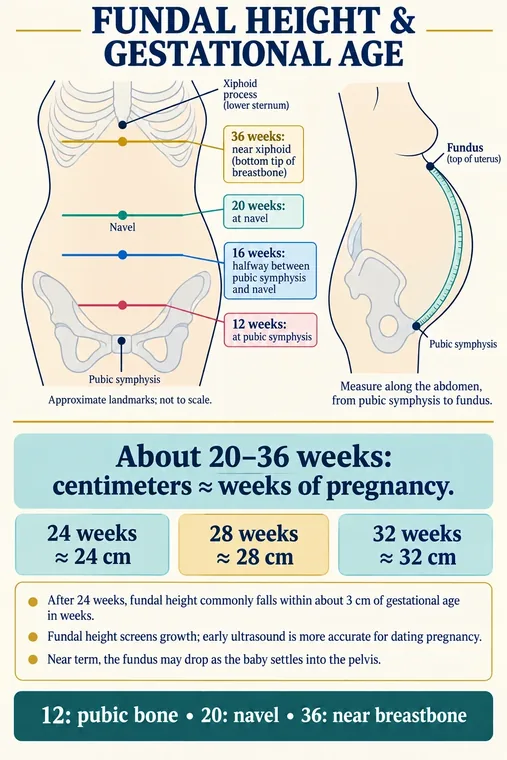
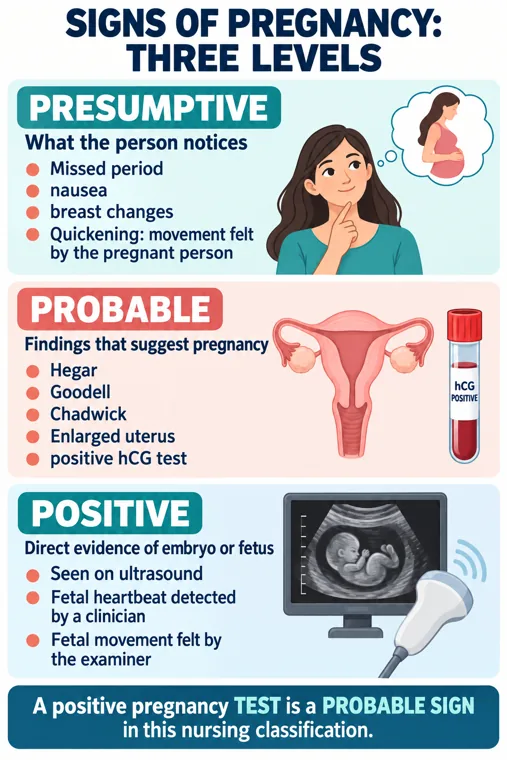
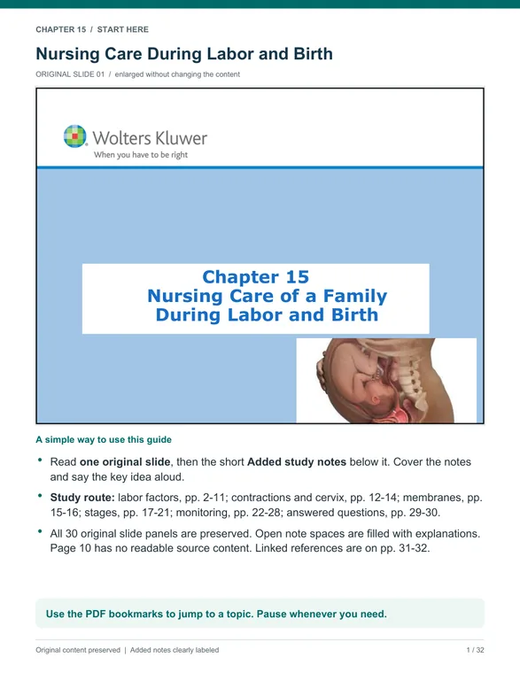

Maternal Newborn Nursing
Antepartum, intrapartum, postpartum and the newborn — fourteen modules across four exams.
M1 visual references 10
Every card in the Visual library tagged NUR 234 · M1 · Reproductive Life Planning & Contraception, grouped by type. Tap a group to open it.
Infographics 2
Study guides & PDFs 3
PowerPoints 5
M2 visual references 11
Every card in the Visual library tagged NUR 234 · M2 · Conception, Fetal Development & Placental Function, grouped by type. Tap a group to open it.
Infographics 6
Study guides & PDFs 3
PowerPoints 2
M3 visual references 18
Every card in the Visual library tagged NUR 234 · M3 · Physiologic & Psychological Changes of Pregnancy, grouped by type. Tap a group to open it.
Infographics 8

Pregnancy Discomforts — and the Warning Signs🖼️ Infographic · Full-size image →Preview here

Pregnancy Signs — Presumptive, Probable, Positive🖼️ Infographic · Full-size image →Preview here

Fundal Height & Gestational Age🖼️ Infographic · Full-size image →Preview here

Signs Of Pregnancy: Three Levels🖼️ Infographic · Full-size image →Preview here
Study guides & PDFs 7
M4 visual references 16
Every card in the Visual library tagged NUR 234 · M4 · Prenatal Assessment & Antepartum Fetal Surveillance, grouped by type. Tap a group to open it.
Infographics 8
Study guides & PDFs 6
PowerPoints 2
📊 Exam 1 infographic collection — 32 plates
Your 11×17 PowerPoint of Simple Nursing and other infographics for Modules 1–4: reproductive foundations, pregnancy signs and assessment, fetal development, prenatal infections, diabetes and fetal well-being tests. One plate per slide.
🎮 Modules 1–4 Matching Games
72 matches, six pairs a round. Mixed tiles on a stopwatch — a wrong match adds a second. Every card carries a hint, an explanation and a clinical source. Pick a module:
- Module 1Contraception — methods, teaching, eligibility (16)
- Module 2Fetal development — circulation, placenta, structures (16)
- Module 3Pregnancy signs and GTPAL cases (20)
- Module 4Prenatal assessment — NST, CST, BPP, screening (20)
It keeps your first-try score, and anything you missed or took a hint on comes back for a retry.
Nothing to install and no account. There is a stopwatch now, so you can race your own best round.
▶️ Play here
🧮 GTPAL Case Lab — 24 practice histories
Practice counting pregnancies, term and preterm deliveries, early losses, and living children. Includes twins, triplets, exact week cutoffs, and GP versus GTPAL.
Play GTPAL here
M5 visual references 16
Every card in the Visual library tagged NUR 234 · M5 · Nutrition & Health Promotion in Pregnancy, grouped by type. Tap a group to open it.
Infographics 3
Study guides & PDFs 9
PowerPoints 4
Preview here
Preview here
M6 visual references 19
Every card in the Visual library tagged NUR 234 · M6 · Labor & Birth, grouped by type. Tap a group to open it.
Infographics 3
Study guides & PDFs 11

Chapter 15 · Labor & Birth — Focus-Friendly Study Guide📄 Study guide · Opens in Drive →Preview here
Preview here
Preview here
Preview here
Preview here
PowerPoints 5
M7 visual references 11
Every card in the Visual library tagged NUR 234 · M7 · Fetal Monitoring, Comfort & Analgesia in Labor, grouped by type. Tap a group to open it.
Infographics 2
Study guides & PDFs 9
Preview here
Preview here
Preview here
M8 visual references 9
Every card in the Visual library tagged NUR 234 · M8 · Early Pregnancy Bleeding & Ectopic Pregnancy, grouped by type. Tap a group to open it.
Infographics 4
Study guides & PDFs 4
PowerPoints 1
M9 visual references 3
Every card in the Visual library tagged NUR 234 · M9 · Hypertensive Disorders & Magnesium Sulfate, grouped by type. Tap a group to open it.
Infographics 2
Study guides & PDFs 1
M10 visual references 14
Every card in the Visual library tagged NUR 234 · M10 · Dysfunctional Labor, Uterine Rupture & Obstetric Drug Math, grouped by type. Tap a group to open it.
Infographics 6
Study guides & PDFs 8
M11 visual references 17
Every card in the Visual library tagged NUR 234 · M11 · Postpartum Assessment & Hemorrhage, grouped by type. Tap a group to open it.
Infographics 6
Study guides & PDFs 11
Preview here
Preview here
Preview here
M12 visual references 14
Every card in the Visual library tagged NUR 234 · M12 · The Normal Newborn & Thermoregulation, grouped by type. Tap a group to open it.
Infographics 5
Study guides & PDFs 9
Preview here
Preview here
Preview here
Preview here
Preview here
M13 visual references 7
Every card in the Visual library tagged NUR 234 · M13 · Newborn Feeding, grouped by type. Tap a group to open it.
Infographics 4
Preview here
Study guides & PDFs 3
M14 visual references 17
Every card in the Visual library tagged NUR 234 · M14 · The High-Risk Newborn & Course Review, grouped by type. Tap a group to open it.
Infographics 3
Study guides & PDFs 9
Preview here
Preview here
Preview here
PowerPoints 5
🔍 What the marks on this page mean
Red wavy underline — an absolute rule. Never, do not, contraindicated, hold it. These are the lines that turn a right answer into a wrong one.
Gold bold — a number that decides a question: a dose, a lab value, a time window, an age cutoff.
Mint italic — a priority or sequence cue. What comes first.
Bold is the term the question is really about. Same system as your NUR 198 pages.
🧠 Mega Quiz
Every question from every week, one at a time, on its own page — plain background, big text, filter by exam or week. This page closes when it opens.
▸🔍 Where this page came from
🔍 Where this came from Reconstructed — read this
Corrected. My first version guessed the week order from chapter numbering and got three of the four exams wrong. Dr. Hansen's four exam-prep recordings settled it: Exam 1 antepartum · Exam 2 labor and birth · Exam 3 complications · Exam 4 postpartum and newborn. So labor is Exam 2 (I had 3), complications are Exam 3 (I had 5), postpartum is Exam 4 (I had 3). There are four unit exams plus a comprehensive final. I originally wrote that there was no final, because none of Dr. Hansen's four recordings mentions one — that was wrong, and you told me so. Your fifth podcast episode is the final review. The exam grouping is confirmed; how the 14 weeks divide up inside each exam is still my inference, and the final is comprehensive over all fourteen.
▸🎯 How she wants these questions answered — 14 rules
Stated out loud across all four recordings. These are not course-specific — they work on every exam you sit, including NCLEX.
- Read the polarity first. "Indicates a need for further teaching" and "requires follow-up" mean hunt the false statement — the other three are true. "Demonstrates correct understanding" flips it. She calls this out on every single one.
- Prioritization is really just sorting expected from unexpected. An actual problem posing a serious threat beats a potential one.
- ABCs first, then Maslow — physiological before psychosocial or education — then the nursing process: assess before you plan or intervene, unless an immediate action is required.
- "When in doubt, choose the option that involves assessing the client" whenever the symptoms suggest a complication.
- Choose the least invasive intervention that fixes the underlying cause before you reach for medication or anything invasive.
- Eliminate the absolute normalizations. "This is normal," "it will resolve after delivery," "just rest" are usually wrong.
- Eliminate extremes and premature escalation — immediate cesarean, immediate induction, calling the provider before the situation warrants it.
- SATA: treat every option as its own separate true/false question.
- Know the numbers cold — dilation ranges, fundal height, NST criteria, weight gain, lab thresholds — then eliminate any option whose numbers do not fit.
- Match the answer to the stem's timeframe. "Immediately post-epidural," "36 hours postpartum," "2 weeks postpartum" each change the correct answer.
- Eliminate unsafe options outright: supine in late pregnancy, ambulation after an epidural, pushing before full dilation.
- Dosage: three legal methods — ratio-proportion, dimensional analysis, desired-over-have. Dimensional analysis is the most accurate; desired-over-have the most common. Do not round until the final step. Check whether the order is weight-based. Converting minutes to hours is the last step and the one most often forgotten.
- Her clinical judgment scaffolding, said aloud on every item: recognize cues → analyze cues → prioritize hypotheses → generate solutions → take action → evaluate outcomes.
- Exams are whiteboard only — no paper.
▸⚠️ Before you trust the recordings — 39 corrections
🧭 In the ATI book but NOT in any of your 14 weeks
Real topics your course will still test. Nothing on this page owns them, so they are the easiest thing to walk into an exam having never revised.
- Infections in pregnancy — the biggest gap by far ch. 8
- Roughly 600 lines: HIV (scheduled cesarean above 1,000 copies/mL, intrapartum zidovudine 3 h before surgery), the GBS screening window and prophylaxis criteria, chlamydia, gonorrhea, syphilis, hepatitis B, HPV, trichomoniasis, bacterial vaginosis, candidiasis, and the whole TORCH set — including that active herpes lesions in the last 6 weeks mean cesarean, with suppressive acyclovir from 36 weeks. Heavily tested and it has no home in your week list.
- Gestational diabetes as a disease, not just a diet ch. 9
- Week 5 has the nutrition and week 9 has hypertension, so GDM screening thresholds, the 1-hr/3-hr sequence, insulin vs glyburide, and the neonatal consequences can fall straight between two weeks.
- Preterm labor, PROM and pPROM, tocolytics ch. 10
- Week 10 names dysfunctional labor but not preterm labor. Betamethasone dosing, nifedipine, terbutaline, fetal fibronectin and cervical length all live here.
- Late-pregnancy bleeding ch. 7
- Week 8 is scoped to early bleeding and ectopic, but placenta previa, abruption and vasa previa sit in the same chapter and are prime exam material.
- Cervical insufficiency, hyperemesis, iron-deficiency anemia ch. 9
- No obvious home in the week list.
- Induction and augmentation procedures ch. 15
- Bishop score, cervical ripening agents and their sequencing intervals, external cephalic version, amniotomy, amnioinfusion, operative vaginal birth, episiotomy types, cesarean care, TOLAC/VBAC criteria.
- Intrapartum emergencies beyond rupture and dystocia ch. 16
- Prolapsed cord is a guaranteed priority-action question. Also meconium-stained fluid, precipitous birth, amniotic fluid embolism.
- Postpartum infection and thromboembolism ch. 20–21
- Endometritis, mastitis, wound infection, UTI, DVT/PE, DIC, ITP, anticoagulant teaching.
- Postpartum mental health ch. 22
- Blues vs depression vs psychosis, screening timing, and the safety-first priority.
- Family adaptation ch. 18
- Taking-in / taking-hold / letting-go, bonding behaviors that signal impairment, co-parent and sibling adaptation.
- Newborn discharge teaching ch. 26
- Car seat specifics, safe sleep, bathing, crib safety, when to call the provider.
⚖️ Your ATI book vs current practice
Answer the way your course teaches it. The current position is here so NCLEX or a preceptor does not blindside you.
- Postpartum hemorrhage definition
- A single threshold of
1,000 mLfor any birth type. - This matches current ACOG. Many instructors and older resources still teach 500 mL vaginal / 1,000 mL cesarean. Find out which one your exam uses — if your lecture said 500, answer 500.
- Oxygen for a nonreassuring fetal heart rate
- The book contradicts itself — most sections hedge oxygen to "if maternal hypoxia or per policy," but the tachysystole and oxytocin sections still direct 8–10 L/min by mask.
- Current evidence does not support routine intrauterine oxygen resuscitation in a normally oxygenated client. Repositioning, stopping oxytocin and fluids are the interventions with support.
- Antenatal corticosteroid window
- Betamethasone restricted to
24–34weeks. - Mainstream now extends a single course into the late preterm period (34 0/7–36 6/7) for selected clients at risk of imminent birth.
- Latent / active phase boundary
- One table says latent 0–4 or 6 cm; another says latent 0–5 with active starting at 6.
- An internal contradiction. Answer 6 cm — that is the mainstream definition of active labor.
- Newborn hypoglycemia threshold
- A healthy term newborn can tolerate "as low as 30 mg/dL," while the intervention trigger is set at 40–45.
- Mainstream operational thresholds are higher and rise with age of life. The 30 figure invites a wrong answer — treat below 40–45.
- GDM risk factor "age older than 25"
- Listed as a risk factor.
- Dated. Screening is now essentially universal at 24–28 weeks and 25 is no longer a meaningful cutoff.
- Gonorrhea regimen
- Ceftriaxone IM paired with azithromycin, no dosing given.
- Current CDC guidance is ceftriaxone monotherapy at a specified dose, adding coverage only if chlamydia is not excluded.
- Blood pressure decline in pregnancy
- Systolic and diastolic each falling
15–20 mmHgin the first two trimesters. - Mainstream figures are smaller, particularly for systolic.
- Newborn discharge timing
- 48 h after vaginal, 72 h after cesarean.
- Federal minimum coverage is 48 and 96 hours respectively.
- Postpartum follow-up
- A visit "within 3 weeks."
- Current guidance is contact within 3 weeks plus a comprehensive visit no later than 12 weeks. The book omits the second half.
- Amnioinfusion fluid temperature
- Says warm it with a blood warmer, then in the next sentence says room temperature.
- An internal error rather than a real position. Room temperature is acceptable for most; warming is reserved for specific situations.
❌ Flat wrong in the recording — 10 of them
Repeat these and they cost you marks. Corrected here.
- Oxytocin dosing
- Oxytocin "is a weight-based drug, so please always watch for that."
- Oxytocin for labor is dosed in milliunits per minute, not per kilogram. There is no weight-based oxytocin protocol in standard obstetric practice — and she contradicts herself minutes earlier saying "in this case, we don't have a weight." Work her bonus problem for the method, then forget the number: 35 mU/min is above typical augmentation ceilings of roughly 20–30 mU/min.
- Newborn thermoregulation
- Shivering "can affect brown fat metabolism."
- Newborns do not shiver to produce heat. They use non-shivering thermogenesis via brown adipose tissue. The phrasing implies the opposite of the mechanism.
- Isotretinoin
- The item calls isotretinoin "an over-the-counter acne medication" and she repeats it uncorrected.
- Isotretinoin is prescription-only, Category X, under a mandatory pregnancy-prevention program. Nothing about it is over the counter.
- Breast engorgement
- Breast fullness is "likely due to frequent feedings."
- Engorgement follows INFREQUENT emptying. She self-corrects about twenty seconds later — make sure you copied the correction, not the first sentence.
- Uric acid in preeclampsia
- Uric acid 6.2 is "an early lab diagnostic study" of preeclampsia.
- Hyperuricemia is a legacy supportive marker, not part of current diagnostic criteria. Answer it her way on the exam; do not carry it to NCLEX as diagnostic.
- Uterine rupture risk
- Rupture is "more commonly associated with tachysystole, which is that scarred uterus."
- Two separate risk factors conflated into one. Tachysystole and a prior uterine scar are independent risks.
- Preeclampsia timing
- Visual disturbances "during that first trimester" may indicate preeclampsia.
- Preeclampsia is defined at or after 20 weeks. She says "third trimester" correctly moments earlier — this is a misspeak, but a student copying notes would record it wrong.
- Formula volume calc
- She announces "the correct answer is 400 mLs."
- She then works it correctly and repeats
480 mLtwice. 480 is right. - CPD and rickets
- Cephalopelvic disproportion "can occur with patients that also have Ricketts disease."
- Historically true — a rickets-deformed pelvis — but effectively obsolete in current US practice.
- Vaginal ring rationale
- The ring "will stay in… it's not removed on a daily basis… that could be a vaginal cup purchased in a local pharmacy."
- Garbled and off-topic. The ring is wrong for a breastfeeding client because it contains estrogen, not because of how it is bought. It stays in place about 3 weeks.
🤷 Where the recordings argue with themselves
- Active-phase dilation: she says "approximately between 4 to 7 centimeters" and, in the same rationale, "latent to early phase is through that, like, 5 centimeter dilation, active phase 6 to 7." Both are defensible — traditional 4–7 vs current ACOG ≥6 cm — but she teaches both in one breath without flagging it. Expect 6 cm as the modern cut-off and read the stem.
- Implantation is given as "6 to 8 days after fertilization" and then "6 to 10 days" two lines later. Standard is 6–10 days.
- Exam 2 late-deceleration item: after giving the answer she delivers an unrelated rationale about a 36-week client with ruptured membranes and cord prolapse. Nothing in the stem mentions ROM — she is reading the wrong slide.
- Exam 3 hypertonic labor: "it's in the latent stage of labor," then "not really immediate concern during the active labor phase." Hypertonic uterine dysfunction is a latent-phase phenomenon; the second sentence muddles it.
- Exam 2 final item: she rules out cesarean, oxygen and repositioning but never states the letter — "perform a cervical exam" is the answer by elimination only.
- Exam 2 weight gain: the option is read as "25 to 30 pounds," her answer as "20 to 35… 25 to 35." 25–35 lb is correct for a normal pre-pregnancy BMI.
- Her name is transcribed as "Dr. Monty Hansen" on Exam 2 and "Dr. Brittany Hansen" on Exam 4. Same presenter throughout: Dr. Renee Hansen.
🔍 Transcript decoder
The transcripts are auto-generated and mangle medical words, so Ctrl+F fails on the real spelling. Search the left column instead.
| The transcript says | It means |
|---|---|
| prima gravita | primigravida |
| fatal | fetal |
| dropper | Doppler |
| funnel / fundle height | fundal height |
| last mental / special period | last menstrual period |
| GL's rule | Naegele's rule |
| blastocyte | blastocyst |
| flippin too / ampull | fallopian tube / ampulla |
| vibrates | fibroids |
| cladding disorders | clotting disorders |
| contradicted | contraindicated |
| non-strocess | nonstress test |
| physical disturbances | visual disturbances |
| post-epidal | post-epidural |
| semiflars | semi-Fowler's |
| requisitioning | repositioning |
| uteral placental | uteroplacental |
| LLP | LOP — left occiput posterior |
| occipitude posterior | occiput posterior |
| fully face-ment | fully effaced |
| cephalopelpic | cephalopelvic |
| tachystystole | tachysystole |
| toxolytics | tocolytics |
| HELP syndrome | HELLP syndrome |
| Hyperuresemia | hyperuricemia |
| tetragenic / "Tara" | teratogenic |
| methyltrexate | methotrexate |
| uninterrupted ectopic | unruptured ectopic |
| HCD levels | hCG levels |
| non-rehythm mask | nonrebreather mask |
| lactane / lactating ringer | lactated Ringer's |
| 1,000 moles | 1,000 mL |
| desire to have | desired over have |
| raise your proportion | ratio proportion |
| stata | SATA — select all that apply |
| Masl's hierarchy | Maslow's hierarchy |
| Gonovine | methylergonovine (Methergine) |
| fine manual compression | bimanual compression |
| bogging uterus | boggy uterus |
| descendant bladder | distended bladder |
| pieziotomy | episiotomy |
| SITS bath | sitz bath |
| garagement | engorgement |
| surgical checks | cervical checks |
| A minister | administer |
| assess the provider with a AROM | assist the provider with AROM |
| LSE / LLC | LSC — Learning Success Center |
7–10 days = a dose or a number
NUR 234 · Maternal Newborn Nursing · built from your own course documents · 🔒 public link · search indexing discouraged